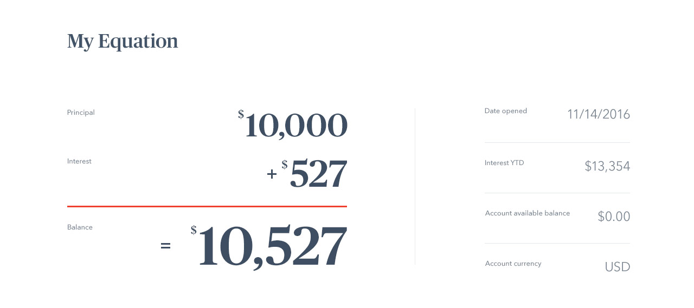
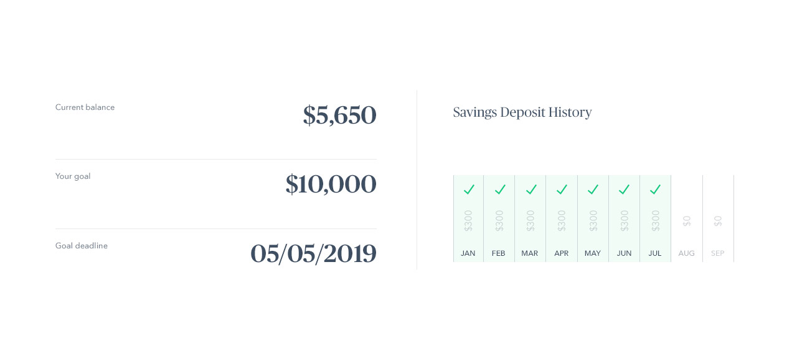
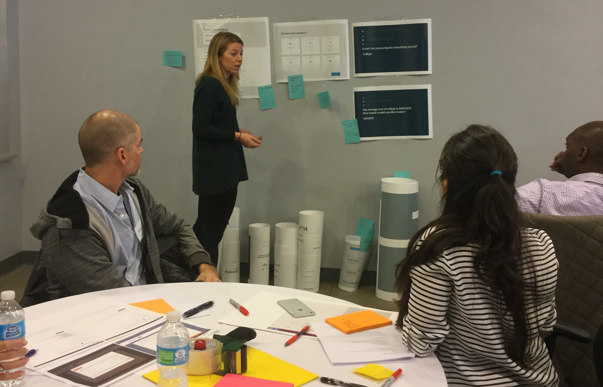
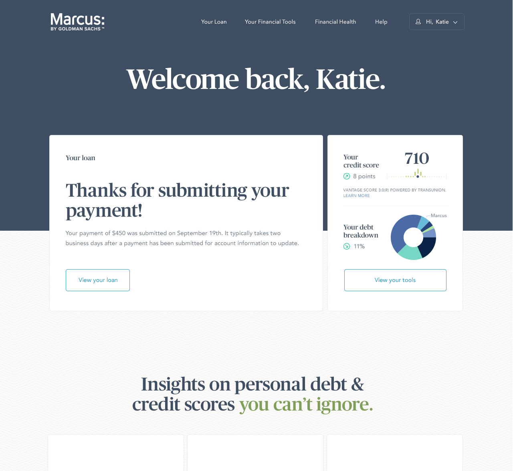
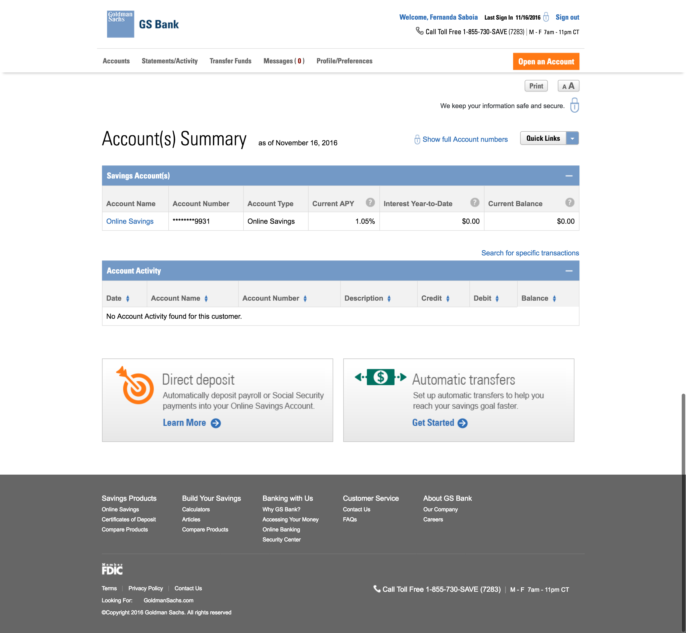
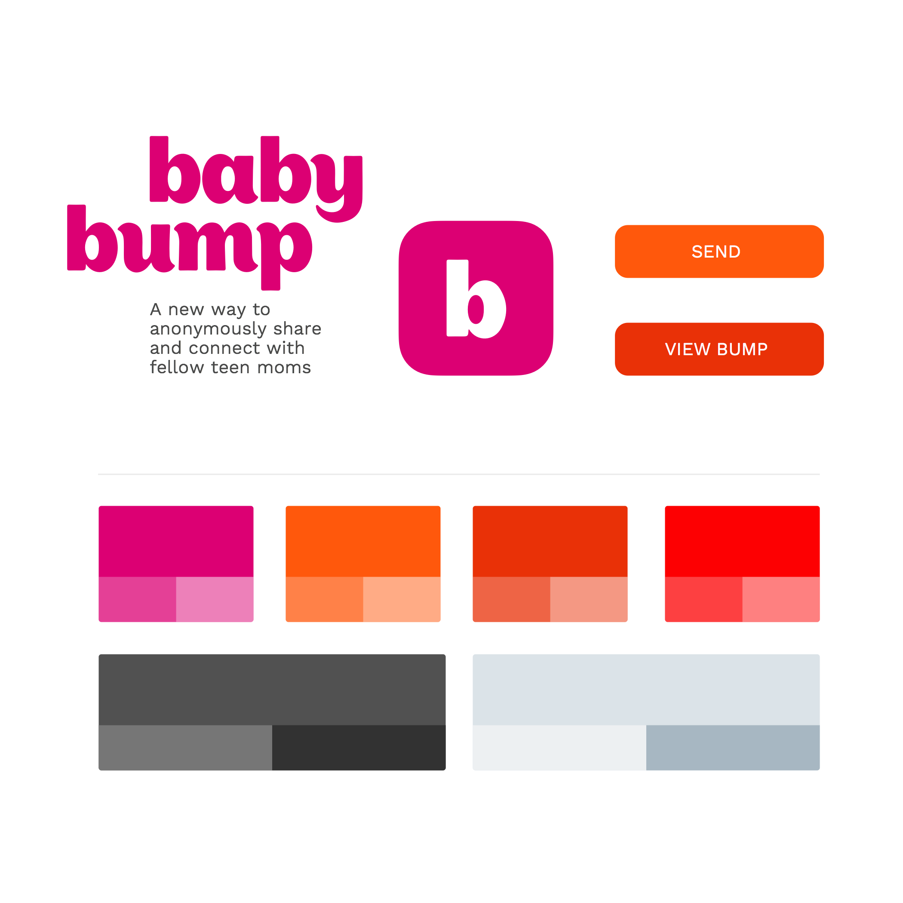

Guiding Goldman Sachs into the consumer-facing market
Marcus Savings
Date
2017
Project Role
User Experience
Objective
Expand and evolve the Marcus consumer-facing brand to accomodate their new savings products
Starting with the users
One of the initial steps of the project was a user testing session, we dubbed “co-creation session”. For this part of the project, my team and I evaluated multiple savings platforms in the current market and used that data, complied by our lovely product strategist, to develop five core features we wanted to test, Product Selection, Dashboard, Calculators.
We then worked with our designers developing “hi-fi wireframes” and visual treatments to bring into the session. The visual stimuli were more like modules that we then showed to users. We also developed a list of questions to ask and had a note taker, designer and facilitator sit with each of the teams.
-
Example Dashboard Stimuli Version A
 -
Example Dashboard Stimuli Version B

Co-Creation Session
In the session we are purposefully recruited users who would identify themselves as "creatively inclined" so that we could ask them to suggest features and actively particpate in the discussion.

The Outcome
After compiling the feedback we used what we learned to guide the start of the project. We distinguished two distinct directions from the feedback. Marcus either in the "passenger seat" or the "drivers seat". Essentially dictating the position of the product with the user
Explore the full research reflection
Dashboard Drama
One of the first elements that we tackled was the dashboard and navigation. Looking back I don’t think this was the best place we could have started for this project. The client was eager to see how the current loans platform and the unbranded savings platform would live together, as well as how the system could expand for future product additions which is why we started with it. However, it would have made more sense to leave this task to later in the project as we ended up iterarting on it for the entiriety of our sprints and additional requirements would pop up as we built out additional pages, such as notifications and legal requirements for displaying loan collection information. Nonetheless we pushed, on spending two sprints on iterations and experimenting with a variety of layouts.
- 
- 
The Challenge
The navigation was a challenge as we discovered that 30% of users had 2-3 accounts and 20% had over 60 accounts
*** Put some graphic here that shows the number of accounts for the number of users ***
Branding
At this stage the team split up to work on individaul user interface proposals. Looking at a lot of other visual interfaces in this space, there was a common theme of bright fun colors and bubbly type. I went with these trends at first but soon realized that teens don't need another cuddly app like the ones that track diapers. The branding needed to be playful, but not too childish.

- 
The Solution
In the end, I decided to go with a different name and a more angular layout to complement GT Sectra as the selected primary font. The name came about from one mother lovingly remembering the comfort and joy she felt when she felt her baby "kickback" in her stomach after she was reading a nursery rhyme.
Fonts & Colors
- Headers: GT Sectra Display Bold
- Sub-Headers: HK Grotesk Bold
- Body: HK Grotesk Regular
- #44b86c
- #11adb8
- #ffca00